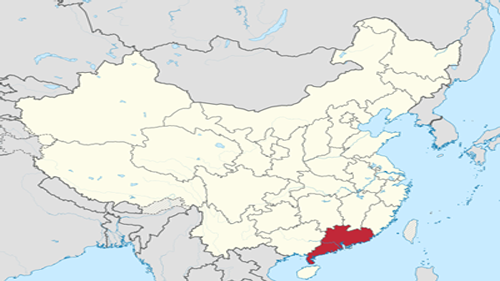
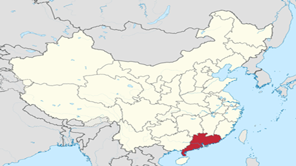

Guangdong is one of the first provinces to reform and open to the outside world in Mainland China. Its economic aggregate has been the largest in China since 1989. It is one of the most developed regions in China. As its economy took off, Guangdong also attracted a large number of migrants. Its total population rose from the sixth place in China in the 1950s to the first place in China. By the end of 2019, guangdong had 115 million permanent residents.
 
